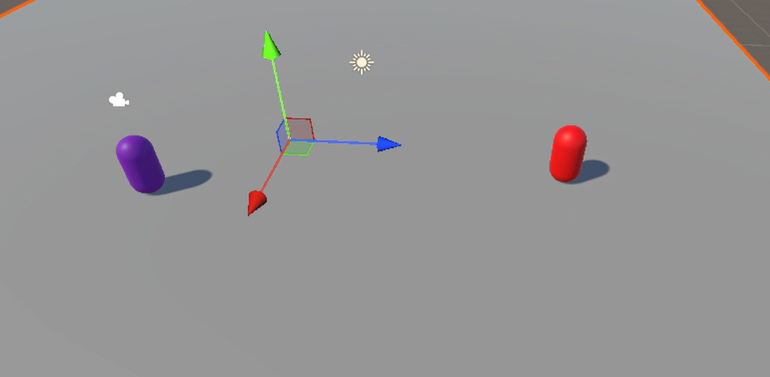
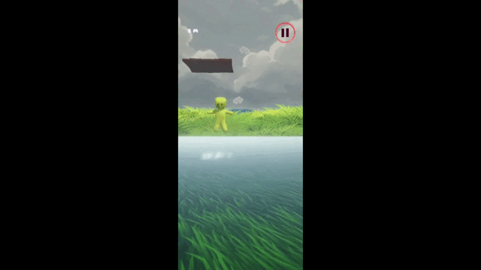
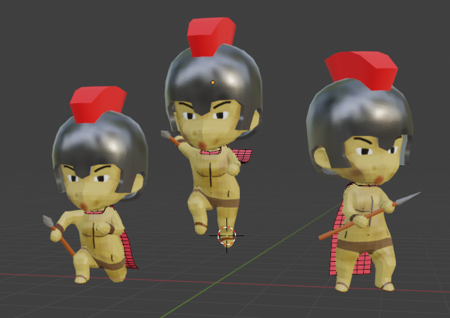
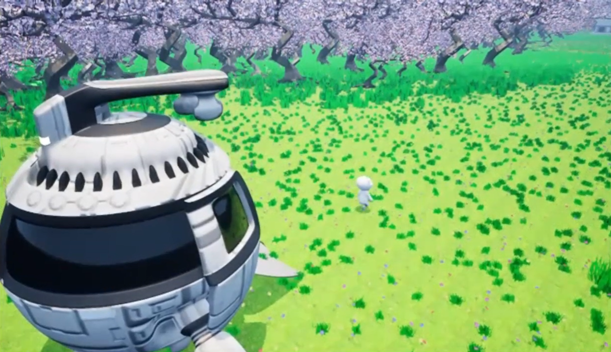

Unity
Avanzado
.jpg)
Avanzado

Avanzado
Gameplay Programmer con nivel Intermedio Alto: domino la arquitectura de mecánicas, físicas y animación en Unity, mientras continúo perfeccionando herramientas de diagnóstico profundo de memoria.
Colaboración en proyectos de juegos VR y 3D, incluyendo pruebas de árboles de comportamiento e interacciones jugables desarrolladas en Unity.
Asistencia a LatamSummit 2025, evento de referencia para la industria de videojuegos en Latinoamérica.
Charlas universitarias con profesionales de Ubisoft y de Niebla Games, recibiendo retroalimentación y una mirada más profunda de la industria nacional e internacional.

Es un árbol de comportamiento en C# para la IA de un enemigo. En este me encargue de:
- Organizar las decisiones por patrullar por defecto, perseguir si detecta al jugador en su rango de visión, y atacar cuando está cerca, gestionando los estados del movimiento en tiempo real.
- Creacion de un sistema de programacion orientado a objetos para poder usar el sistema de estados de un behavior tree, creando nodos reutilizables y escalable a futuras espansiones del proyecto.
- Crear un sistema de deteccion de jugador, el enemigo persigue al jugado para bajarle la vida cuando esta en su rango, al estar cerca, estara atacando, poco a poco bajandole la vida haciendolo desaparecer.

Videojuego movil donde debes subir por unas plataformas y llegar lo mas lejos posible. Mi aporte de este proyecto fue:
- Programacion de interacciones con el movil, el personaje se mueve gracias al giroscopio del telefono integrado.
- Programacion de la camara, esta sigue al elemento del personaje hacia arriba con tal de que el jugador pueda subir infinitamente, pero no bajara, el limite de abajo se convierte en el limite de GameOver.
- Diseñe el personaje, inspirado de personajes como strumble guys en su simplicidad, la idea es que es un personaje al desnudo que se pudiera personalizar.


Edición de cámara, escenario y montaje para una animación interactiva en Unreal.
Ver proyecto
Proyecto de inicio de año con enfoque en narrativa y estilo visual, actualmente en pausa.
Ver proyecto